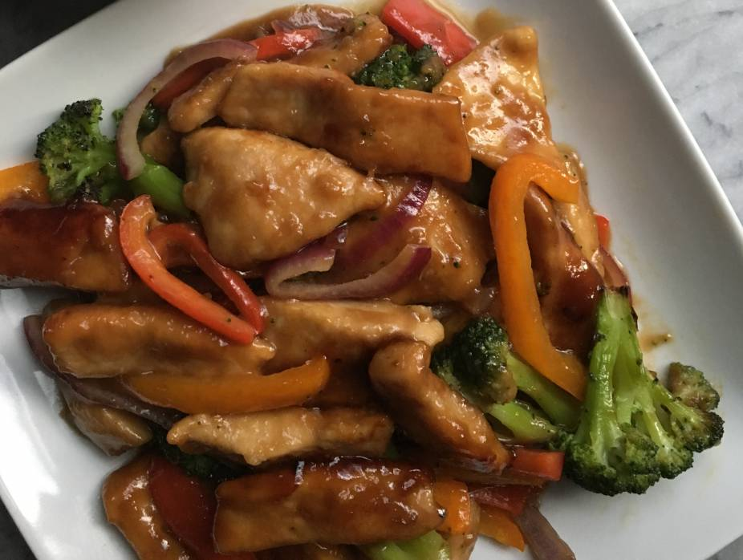

Chinese chicken

Description
Chinese chicken with pineapple!
My Mom's special recipe.
Ingredients
- 1 onion, chopped
- 1 carrot, chopped
- 1 green pepper, chopped
- 750g Chicken Pieces
- 425g Pineapple pieces
- 25ml Brown Vinegar
- 12.5ml Sugar
- 25ml Cornflour
- 25ml Worcester Sauce
- 50ml Chicken Stock
- 12.5ml Soy Sauce
Steps
- Dry fry chicken til half cooked then put in a casserole dish
- Saute veges in chicken fat, then add pineapple & juice.
- Simmer 5 mins
- Mix Cornflour with remaining ingred. & stir into pan
- Bring to boil til thickens then pour over chicken
- Bake at 180 degrees (350 degree F) 1.5 hours
- Serve with rice or noodles